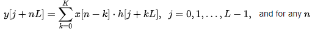
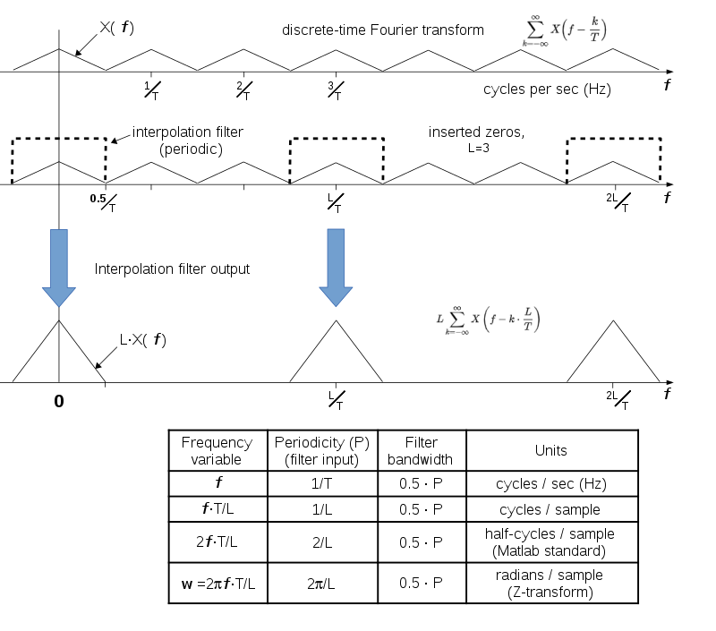

Upsampling
In digital signal processing, upsampling, expansion, and interpolation are terms associated with the process of resampling in a multi-rate digital signal processing system. Upsampling can be synonymous with expansion, or it can describe an entire process of expansion and filtering (interpolation).
When upsampling is performed on a sequence of samples of a signal or other continuous function, it produces an approximation of the sequence that would have been obtained by sampling the signal at a higher rate (or density, as in the case of a photograph). For example, if compact disc audio at 44,100 samples/second is upsampled by a factor of 5/4, the resulting sample-rate is 55,125.
Upsampling by an integer factorRate increase by an integer factor L can be explained as a 2-step process, with an equivalent implementation that is more efficient.
Expansion: Create a sequence Xl[n] comprising the original samples,x[n] separated by L − 1 zeros. A notation for this operation is: Xl[n] = X[n] + L
Interpolation: Smooth out the discontinuities with a lowpass filter, which replaces the zeros.In this application, the filter is called an interpolation filter, and its design is discussed below.
When the interpolation filter is an FIR type, its efficiency can be improved, because the zeros contribute nothing to its dot product calculations. It is an easy matter to omit them from both the data stream and the calculations. The calculation performed by a multirate interpolating FIR filter for each output sample is a dot product.
where the h[•] sequence is the impulse response of the interpolation filter, and K is the largest value of k for which h[j + kL] is non-zero. In the case L = 2, h[•] can be designed as a half-band filter, where almost half of the coefficients are zero and need not be included in the dot products.
Impulse response coefficients taken at intervals of L form a subsequence, and there are L such subsequences (called phases) multiplexed together. Each of L phases of the impulse response is filtering the same sequential values of the x[•] data stream and producing one of L sequential output values.
In some multi-processor architectures, these dot products are performed simultaneously, in which case it is called a polyphase filter. For completeness, we now mention that a possible, but unlikely, implementation of each phase is to replace the coefficients of the other phases with zeros in a copy of the h[•] array, and process the sequence at L times faster than the original input rate. Then L - 1 of every L outputs are zero.
The desired y[•] sequence is the sum of the phases, where L - 1 terms of the each sum are identically zero. Computing L - 1 zeros between the useful outputs of a phase and adding them to a sum is effectively decimation. It's the same result as not computing them at all. That equivalence is known as the second Noble identity. It is sometimes used in derivations of the polyphase method.
Upsampling by a fractional factorLet L/M denote the upsampling factor, where L > M.
1.Upsample by a factor of L
2.Downsample by a factor of M
Upsampling requires a lowpass filter after increasing the data rate, and downsampling requires a lowpass filter before decimation. Therefore, both operations can be accomplished by a single filter with the lower of the two cutoff frequencies. For the L > M case, the interpolation filter cutoff,cycles per intermediate sample, is the lower frequency.
The first and third graphs depict the discrete-time Fourier transforms of a sampled function and the same function sampled 3 times faster. The second graph shows the transform of a sequence derived from the low-rate samples by inserting 2 zeros in-between each pair of real samples. It is identical to the first graph, except the numeral 3 is replaced by symbol L. A lowpass filter with bandwidth 0.5/T is also depicted. When applied to the zero-inserted sequence, its spectral output resembles the third graph, which is the desired result of interpolation. The maximum filter bandwidth is tabulated in the frequency units used by the common filter design applications.
